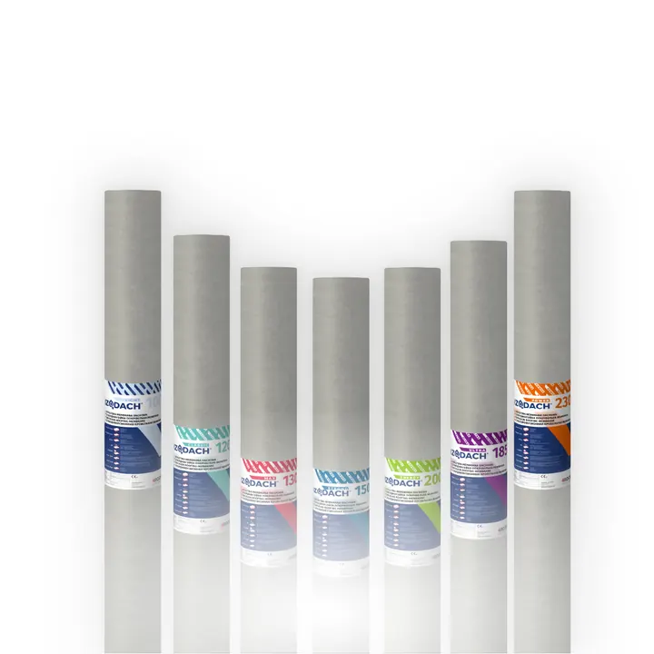
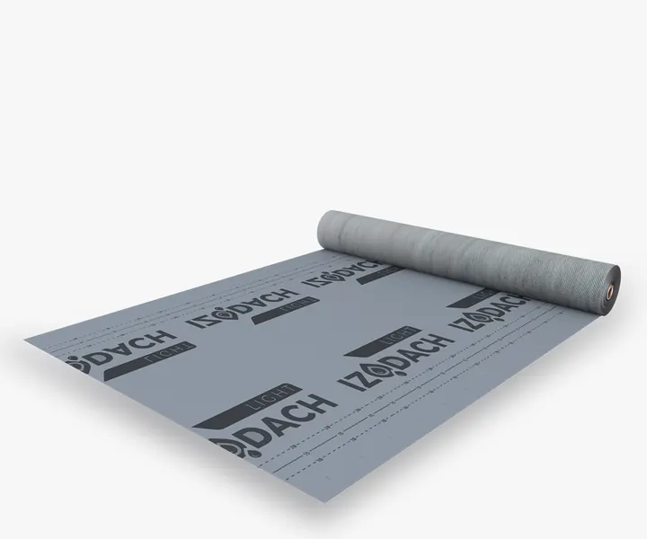
Membrany i paroizolacja IZODACH
LIGHT, CLASSIC, MAX, STRONG, ULTRA, POWER oraz paroizolacje ACTIVE SD10, SD20, SD100 i REFLEX.
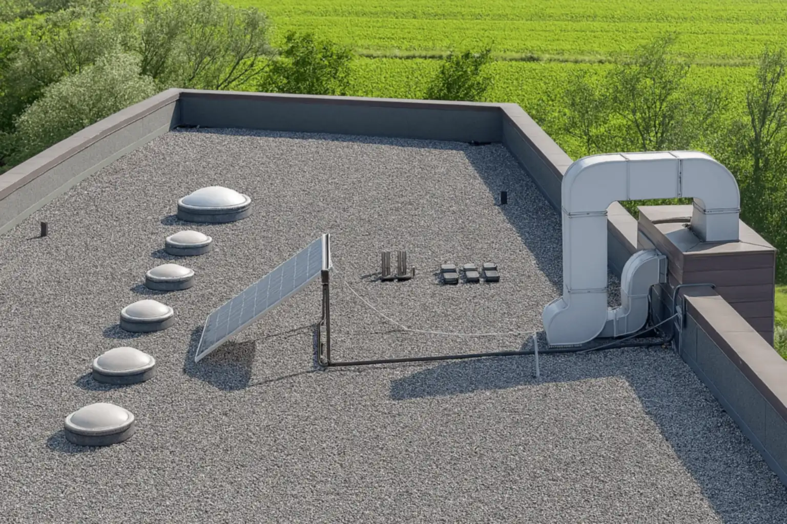
Akcesoria dachowe 4ROOF, membrany IZODACH, taśmy IZOTAPE, papy SBS, masy DEKABIT i gonty BTM. Dla wykonawców, hurtowni i składów budowlanych.
MDF Sp. z o.o. · produkcja i handel, Przeworsk
Od membrany pod pokryciem po papę na dach płaski. Własna produkcja i sprawdzeni partnerzy: papy z Turcji, masy DEKABIT z Niemiec i wyłączne przedstawicielstwo gontów BTM.


LIGHT, CLASSIC, MAX, STRONG, ULTRA, POWER oraz paroizolacje ACTIVE SD10, SD20, SD100 i REFLEX.
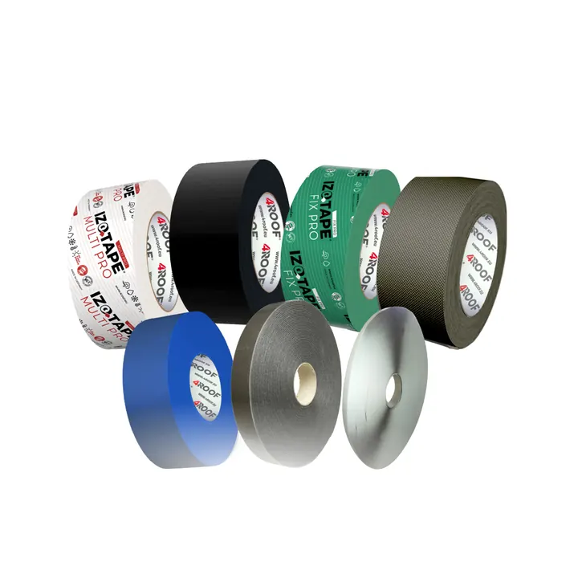
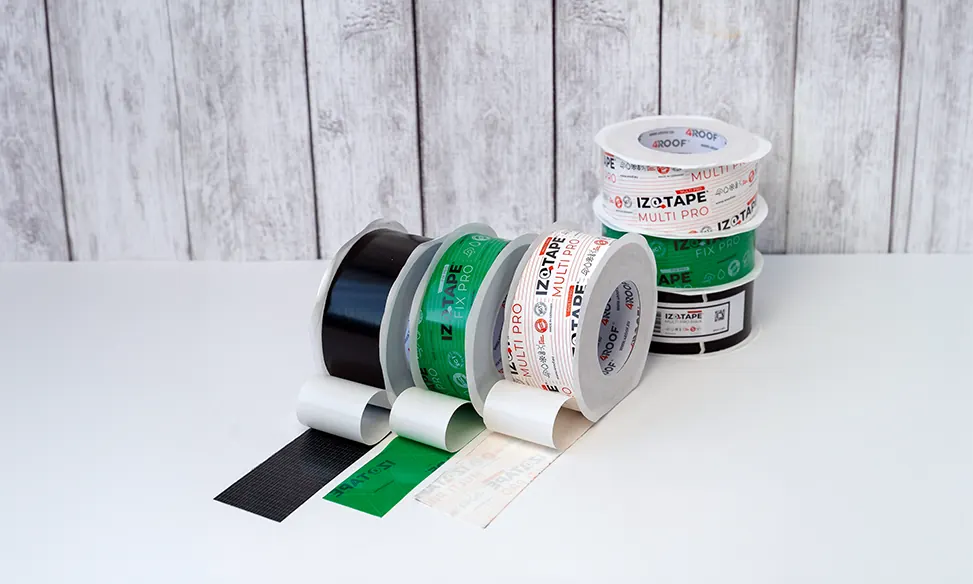
Akrylowe, butylowe i bitumiczne: MULTI PRO, FIX PRO, BUTYL, TERM, BAND, BITAL, FLEX.
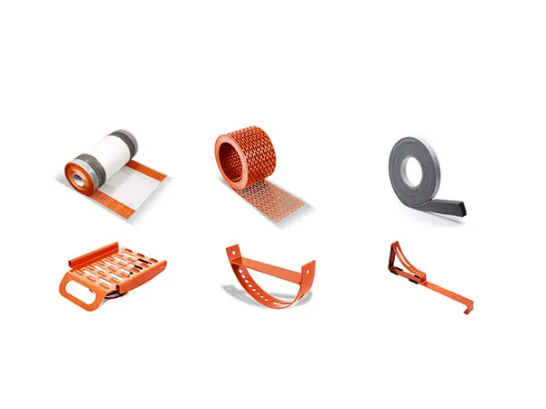
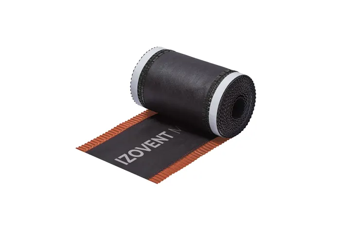
Kalenica, komin, kosz, okap, spinki, ochrona przeciwśniegowa i komunikacja dachowa.
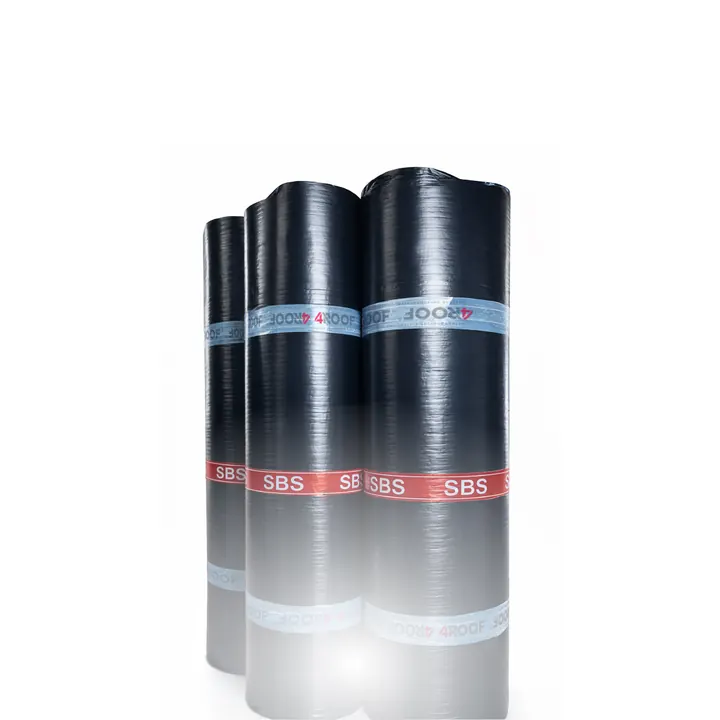
Wierzchniego krycia TOP PV250 S5, podkładowe BASE PV S3 i S4, samoprzylepna SELF BASE, antykorzenna TOP GREEN.
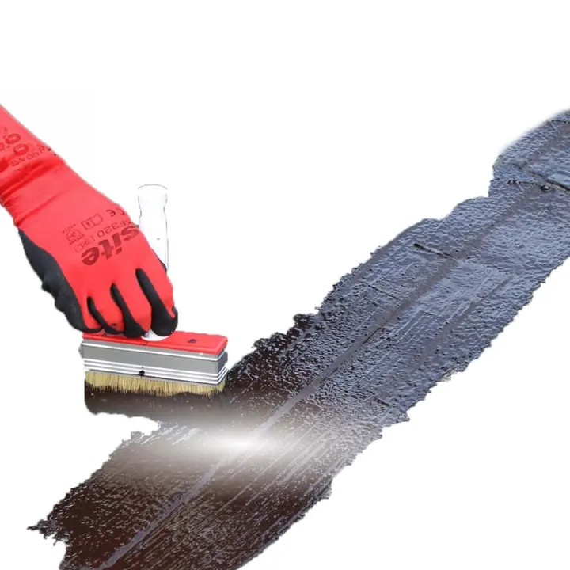
Wielofunkcyjne masy i primery produkowane w Niemczech, do dachów i fundamentów.
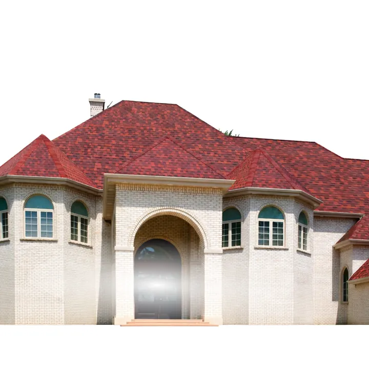
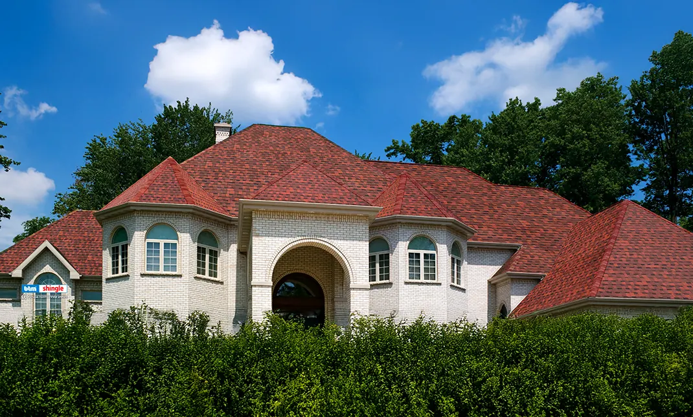
Seria Prestiż w siedmiu kolorach, od grafitu po czerwień. Paczka 2,57 m².
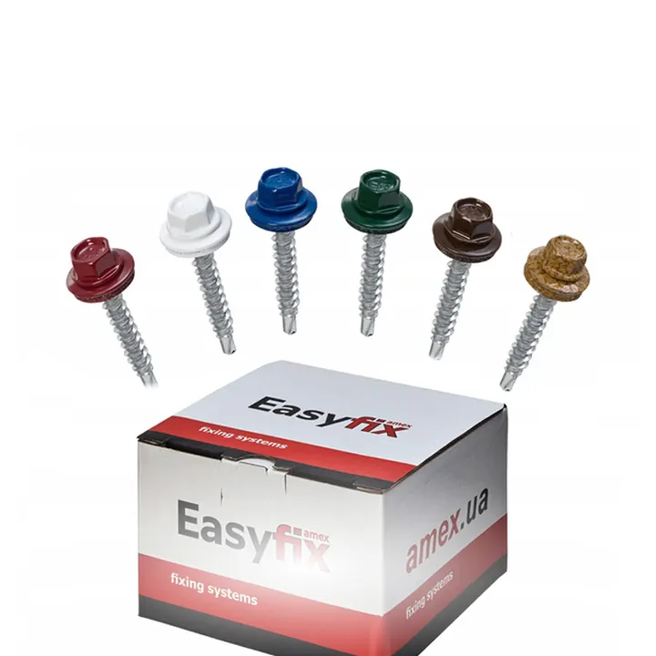
Samowiercące z podkładką EPDM, 4,8x19 i 4,8x35 mm, do blachodachówki i trapezu.
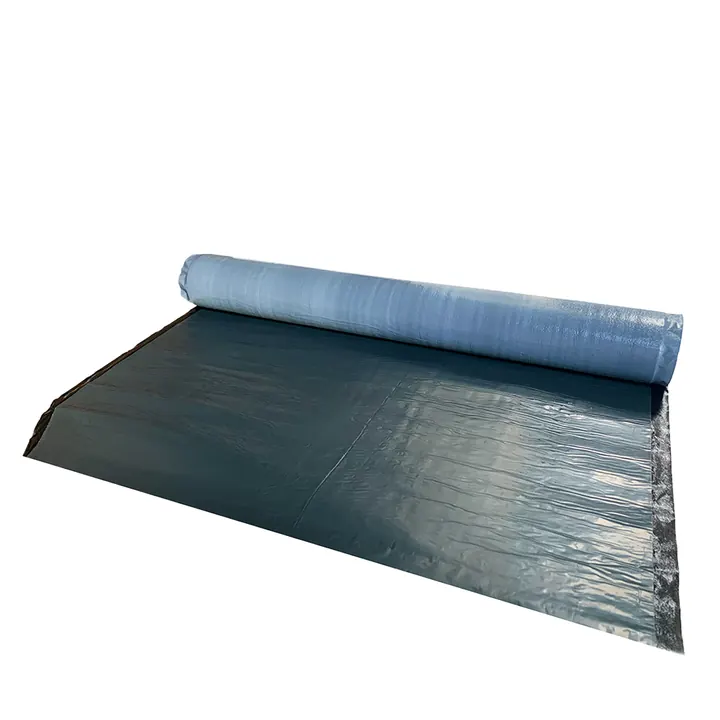
Samoprzylepna IZODACH METALROOF pod blachę na rąbek i taśma dekarska BITAL z aluminium.
Akcesoria 4ROOF do dachów skośnych, ułożone tak, jak dekarz idzie po dachu.
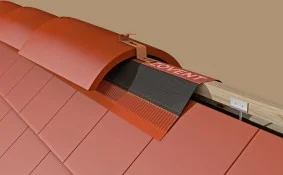
Taśmy kalenicowe IZOVENT: STANDARD, M, LIGHT, GEO, AL, AIR, FLEX. Denko kalenicy PVC, wspornik łaty BL-50, klamry do gąsiorów.
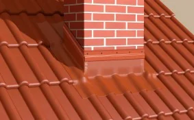
Taśmy kominowe IZOMIN: FLAT EPDM, WAVE EPDM, CLASSIC, QUADRO, EASY STRETCH. Listwy kominowe, także na wpust.
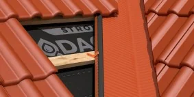
Kosze poprzeczne i podłużne, klin uszczelniający PUS, taśma rozprężna impregnowana.
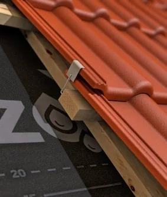
INOX do dachówki ciętej, NORD, K, J, J-416, U oraz spinka uniwersalna do ceramiki.
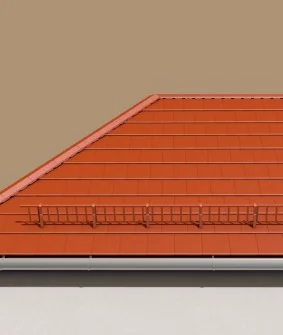
Snowstop typ A łupek, B gont, C beton, D ceramika, S motyl.
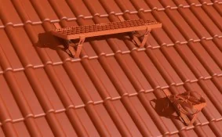
Ławy i stopnie kominiarskie, mocowniki, łączniki i wsporniki do każdego pokrycia.
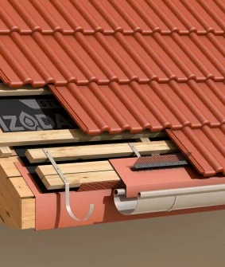
Grzebienie okapowe płaskie i z kratką, pas okapowy, siatka ochronna okapu.
Aktualne ceny promocyjne. Ilości hurtowe wyceniamy indywidualnie.
Wykonawcy, hurtownie i składy budowlane mają swojego opiekuna w regionie. Wystarczy zadzwonić bezpośrednio.
pomorskie, kujawsko-pomorskie, warmińsko-mazurskie, podlaskie, mazowieckie
łódzkie, opolskie, śląskie, małopolskie, świętokrzyskie, lubelskie, podkarpackie
Biuro w Przeworsku: 660 569 352, 604 906 969, info@4roof.pl
MDF Sp. z o.o. z Przeworska zaczynała od akcesoriów do dachów skośnych. Dziś dostarcza kompletną ofertę dachową i hydroizolacyjną dla wykonawców, dystrybutorów i składów budowlanych.
Łączymy własną produkcję ze sprawdzonymi partnerami. Dzięki temu w jednym miejscu kupisz akcesoria, membrany, taśmy, papy, masy i gonty, które do siebie pasują.
MDF Sp. z o.o.
ul. Słowackiego 28a
37-200 Przeworsk
+48 660 569 352+48 604 906 969
Zamówienia detaliczne: sklep 4roof.eu